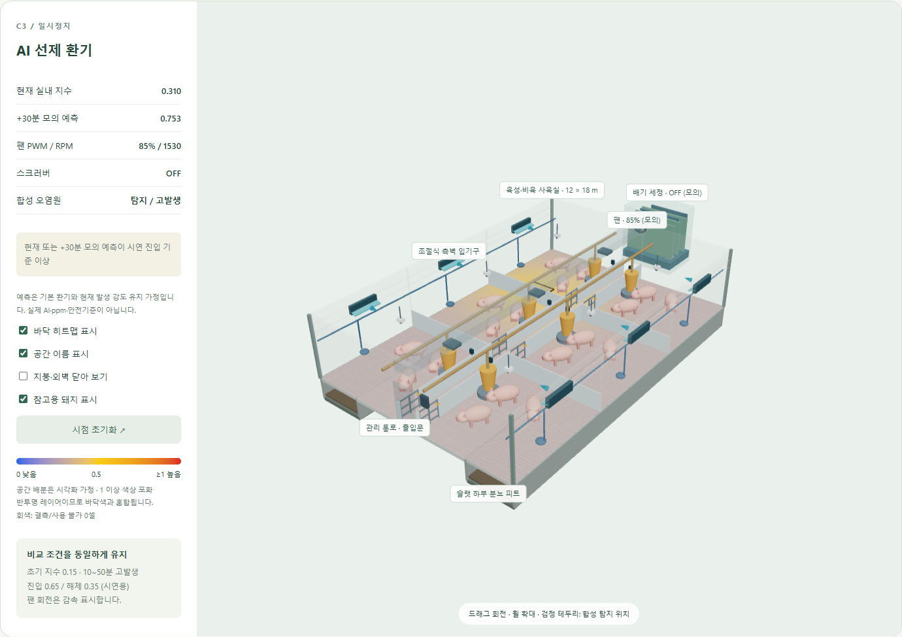
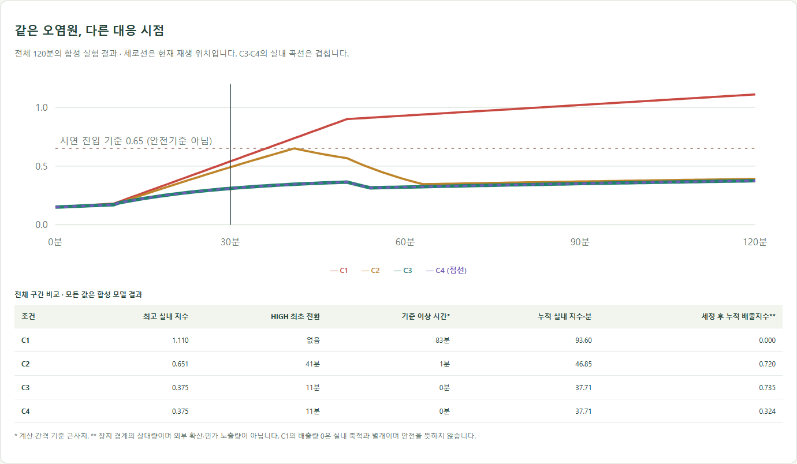
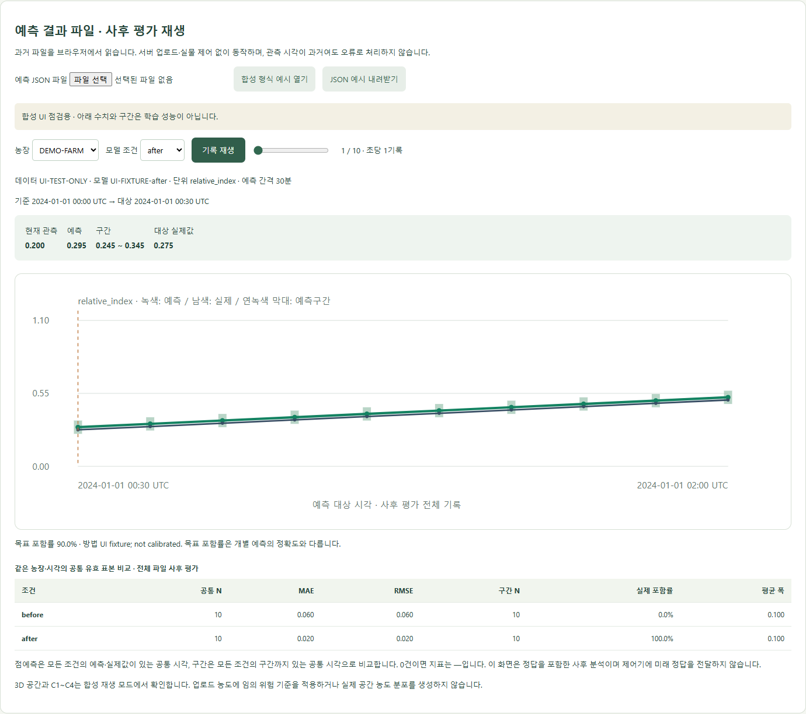

아기데지 — 시뮬레이터 공동 회의
2026.10.07 20:00 · 제안서 제출 10.15 · 시뮬레이터 담당 공유 자료
1. 현재 상태
핵심 연구는 다중 농장 전이학습과 예측 신뢰도, 시연은 시뮬레이터로만 진행한다. 데이터 확보·학습·제안서 작성은 각 담당자가 진행하며, 오늘까지 확보한 자료로 학습을 시작한다. 시뮬레이터는 모델 학습과 병렬로 준비한다.
| 완료 | 현재 범위 |
|---|---|
| 3D 돈사·히트맵 | 돈방·통로·급이/급수·피트·입기·덕트·팬·스크러버. 실제 농장 복제가 아닌 구조 개념 모형 |
| C1~C4 합성 실험 | 재생·정지·배속·시간 이동, 장치 상태, 조건별 그래프 |
| FastAPI 연결 | 합성 데이터 수신, 단위·좌표·시각·결측 검증, 오류·재연결 처리 |
| 예측 파일 재생·신뢰도 비교 | JSON 읽기·시각/단위 검증·결측 처리, 농장·모델 조건 선택, 점예측·예측구간·실제값 표시, 공통 표본의 오차·포함률·구간 폭 계산 |
| 팀원 체험 | 설치 없이 접속하는 임시 HTTPS 링크. 합성 시나리오·파일 재생 제공, 개인별 브라우저에서 실행 |
| 검증 | JavaScript 15개·Python 4개 테스트 통과, 빌드 성공. 파일 읽기·결측·오류·재생·모바일 확인 |
아직 없는 것: 실제 학습 결과 연결과 실데이터 성능 검증. 아래 캡처는 실제 앱 화면이지만 수치·구간은 모두 합성 예시다.
2. 현재 화면과 의미
돈사 내부와 장치 상태

C3의 모의 30분 화면. 왼쪽은 지수·팬·스크러버 상태, 오른쪽은 돈사 구조와 바닥 히트맵이다.
히트맵은 전체 지수를 가정된 공간 분포로 배분한 표시이며 CFD·위치별 실측 농도가 아니다. 드래그/휠로 시점을 조작하고 지붕·이름표·히트맵을 켜고 끌 수 있다.
C1~C4 가상 제어 비교
왜 실험을 바꿨는가? 기존 C1~C4는 ‘환기를 하는가, 민가 쪽으로 배기하는가, 탈취탑을 켜는가’를 비교했다. 내부 제어로 범위를 좁힌 뒤에는 민가·지형·풍향을 재현하는 대신 같은 오염원에서 언제 환기를 강화하는가를 비교하도록 바꿨다. 고정된 입기·배기 계통을 두고 팬 출력을 조절하며, 다중 농장 예측 모델의 제어 활용을 설명하는 보조 시연으로 사용한다.

같은 합성 발생원을 사용한 120분 결과. 표의 수치는 실제 농장 저감 성능이 아니다.
| 조건 | 기존 외부 실험 | 현재 내부 제어 비교 |
|---|---|---|
| C1 | 환기 OFF | OFF 유지. 오염원이 축적되는 가상 스트레스 조건 |
| C2 | 민가 방향 배기 | 현재 지수가 기준을 넘은 뒤 환기를 강화하는 사후 대응 |
| C3 | 비민가 방향 배기 | +30분 모의 예측 등을 기준으로 환기를 먼저 강화하는 선제 대응 |
| C4 | 민가 방향 배기 + 탈취탑 | C3와 동일한 선제 환기 + 배출 공기 세정 |
내부 제어안도 구조에 맞춰 두 가지를 구체화했다. C2~C4는 기본 환기를 유지하다 HIGH로 전환하므로 ‘환기 자체의 유무’보다 ‘강화 시점’을 비교한다. 완전 OFF는 C1에만 둔다. C4의 스크러버는 배출 공기를 처리하고 실내로 재순환하지 않으므로, 같은 환기 제거계수의 C3보다 실내가 더 빨리 회복하도록 설정하지 않았다. 따라서 C3·C4 실내 곡선은 겹치고 C4의 추가 효과는 배출측에서만 비교한다. 실제 풍량·압력손실은 아직 보정하지 않았다.
C2↔C3는 대응 시점 비교, C1은 스트레스 참고, C4는 배출 처리 보조 조건이다. 이 합성 실험 결과를 실제 모델의 전이학습 성능이나 실농장 저감 효과로 해석하지 않는다.
예측 결과 파일과 신뢰도 비교

합성 UI 점검 파일을 읽은 화면. before/after는 조건 선택 기능을 확인하기 위한 이름이며 전이학습 개선을 입증한 결과가 아니다.
파일에서 농장·조건을 선택하면 관측값, 점예측, 구간을 표시한다. MAE/RMSE는 조건 간 공통 유효 시각으로, 포함률·평균 폭은 구간까지 있는 공통 시각으로 계산한다. 목표 포함률과 실제 포함률을 구분하며, 구간·정답이 없으면 지표는 —로 표시한다.
이 화면은 미래 정답을 포함한 사후 평가다. 실제 과거 관측값을 가상 팬 조작으로 바꾸지 않는다. 3D 장치 시연과 예측 성능 비교는 서로 다른 모드다.
3. 구성과 사용법
- 합성 시연: 합성 계산 → 브라우저 직접 재생 또는 FastAPI → 3D·히트맵·장치 상태.
- 모델 결과 확인: 저장된 예측 JSON → 파일 검증 → 농장/조건 선택 → 시계열·구간·비교 지표. 파일은 브라우저 안에서 처리하며 서버 업로드나 추론 서버가 필요 없다.
팀원 시뮬레이터 체험하기 — 설치 없이 접속해 상단 데이터 모드에서 합성 시나리오 또는 예측 결과 파일을 선택한다. 파일 예시가 필요하면 ‘합성 형식 예시 열기’를 누른다. 각자의 조작·선택 파일은 다른 팀원의 화면과 동기화되지 않는다.
주소를 아는 사람이 접속할 수 있는 임시 체험 링크다. 실행 PC와 공유 프로세스가 켜져 있어야 하며, 터널을 다시 시작하면 주소가 바뀐다. 선택한 JSON은 각자의 브라우저에서 처리하고 FastAPI 서버·작업 폴더는 이 링크로 제공하지 않는다. 임시 링크 안내
| 모드 | 조작·주의점 |
|---|---|
| 브라우저 합성 재생 | C1~C4·시간·속도 선택. 시나리오 변경은 0분 초기화, 시간 이동은 정지 |
| FastAPI 합성 재생 — 개발 PC 전용 | 로컬 화면과 API 서버에서 사용. 팀 체험 링크에는 이 메뉴가 없음 |
| 예측 결과 파일 | JSON 선택 또는 ‘합성 형식 예시 열기’. 농장·모델 조건·기록 위치 선택. ‘JSON 예시 내려받기’로 형식 전달 가능 |
현재 파일 규격은 JSON, 5MB/20,000행 이하다. 과거 관측 시각을 그대로 보존하며 실시간 API의 ‘10초 경과’ 판정을 적용하지 않는다. CSV 결과는 실제 컬럼을 받은 뒤 변환한다.
4. 오늘 확정할 연결 사항
모델 학습은 바로 진행하고 점예측 결과부터 먼저 전달한다. 시뮬레이터 때문에 구간 산출이나 학습 완료를 기다릴 필요는 없다.
| 확인할 내용 | 현재 제안 | 회의 기록 |
|---|---|---|
| 인계 담당·첫 샘플 시각 | 담당 1명, 10/08 소량 샘플 목표 | 담당: ___ / 시각: ___ |
| 결과 식별·단위 | 농장 ID, 모델/전이 조건, 모델 버전, 단위, 기준·예측 대상 시각 | 확정값: ___ |
| 구간·평가 결과 | 하한·상한·목표 포함률·구간 산출법, 대상 실제값. 없는 항목은 null | 제공 항목/시점: ___ |
현재값·점예측도 인계 파일에 포함한다. JSON 예시는 연결 가능한 형식이며 모델 담당자의 학습 코드에 이 형식을 강제할 필요는 없다. 다른 출력 형식은 어댑터로 맞춘다. 신뢰도 방법과 실제 성능 수치는 모델 담당 결과를 사용한다.
5. 회의 후 시뮬레이터 일정
| 시점 | 작업·완료 기준 |
|---|---|
| 10/08~09 | 받은 파일의 컬럼·시간·단위 매핑, 실제 점예측 연결. 미수령 시 현재 기능 유지 |
| 10/10~11 | 실제 전이 전후·예측구간 결과 검증. 누락·시각 불일치·비교 표본 확인 |
| 10/12~13 | 연결 범위 고정, 실제 결과/합성 시연 구분 점검, 확정 화면·구현 범위를 제안서 담당에게 전달 |
| 10/14~15 | 실행본 백업·재실행 확인·필수 오류 수정. 새 기능 추가 중단 |
결과가 점예측까지만 나오면 그 범위로 연결하고, 결과가 없으면 합성 시제품임을 명시한다. 다른 담당자의 데이터 확보·학습·원고 일정은 여기서 대신 확정하지 않는다.
6. 확장 — 필요 / 여유 시 / 불필요
필요
| 남은 작업 | 진행 조건 | 다음 작업 |
|---|---|---|
| 실제 모델 출력 연결 | 농장/조건 ID, 단위·시각을 포함한 실제 샘플. CSV라면 헤더 포함 | 기존 재생 규격으로 변환하고 결측·시각 매핑 확인 |
| 실제 전이 전후·구간 결과 검증 | 동일 평가 구간의 예측·실제값, 구간 하한/상한·목표 포함률·산출법 | 공통 표본 지표를 모델 담당 결과와 대조하고 확정 화면 캡처 |
| 실제 농도와 3D 위험도 연결 | ppm→색상 범위/기준과 공간 배분 가정 합의 | 현재 시계열·지표 화면의 결과를 3D 표시와 연결. 정밀 공간 예측으로 표현하지 않음 |
여유 시
| 항목 | 진행 조건 |
|---|---|
| 지표 CSV·실험 이력 저장 | 실제 결과 연결 후 필요하면 추가. 현재 JSON은 파일로 보관 가능 |
| 비전 오염 표식·위치별 위험도 | 같은 돈사/시각의 탐지·좌표 자료 확보 시 |
| 그래프 확대·발표용 화면·번들 최적화 | 핵심 연결 완료 후 남은 시간에 수행 |
불필요 — 이번 제출·시연 범위
실물 센서 설치·장치 통신, 하드웨어 축소모형, 외부 민가·기상·확산/CFD, 모델 재생을 위한 별도 실시간 추론 서버, 로그인·다중 사용자 관리. 현재 필요한 예측 검증을 지연시키므로 이번에는 추가하지 않는다.